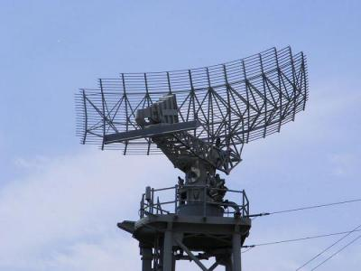

Некоторые неклассические виды радиолокации

Очень кратко остановимся на некоторых неклассических видах радиолокации.
Ранее уже упоминалось о нелинейной радиолокации. Несмотря на весьма слабые отраженные сигналы, которые имеют место в этом случае, их накопление в радиоприемном устройстве за приемлемое время делает это направление радиолокации достаточно привлекательным, а зачастую единственным средством обнаружения малоподвижных, слабоконтрастных целей, обладающих соответствующим эффектом, на фоне мощного отражения от подстилающих покровов.
В последние годы большой интерес и заметное применение находит двухпозиционная радиолокация, при которой облучение цели осуществляется из одного пункта, а прием отраженных радиоволн проводится в других пунктах. Такой способ решения радиолокационных задач позволяет обеспечивать более точную навигационную привязку к исследуемому объекту. Иллюстрацией двухпозиционной радиолокации может служить наша повседневная жизнь, когда источником освещения служит Солнце, мы же воспринимаем рассеянный окружающими предметами солнечный свет.
В какой-то степени к двухпозиционной радиолокации можно отнести так называемую вторичную радиолокацию, нашедшую широкое применение в гражданской и военной авиации. Ее суть сводится к тому, что наземный радиолокатор, облучая летательный аппарат, включает бортовую РЛС, которая передает специальную информацию о полете летательного аппарата и о состоянии некоторых его систем.
Как известно, всякое нагретое тело излучает электромагнитные волны различных частот. Максимум интенсивности этого излучения при температурах порядка 300-350 K приходится на инфракрасный диапазон волн. Существуют и довольно успешно функционируют РЛС, осуществляющие прием этого излучения.
Направление, связанное с использованием этого диапазона носит название ИК-радиолокации. Достоинство ИК-радиолокации состоит в скрытности функционирования РЛС, в трудностях постановки помех ее действию, неэффективности маскировки наблюдаемых объектов. Недостатки связаны с невозможностью осуществления селекции по дальности, а также с сильным влиянием состояния атмосферы. Свободными от последнего недостатка оказались РЛС, работающие по тому же принципу, но в сантиметровом и частично в миллиметровом диапазонах волн. Сам сигнал здесь существенно меньше, чем в инфракрасном диапазоне, однако это не является принципиальным препятствием на пути использования таких РЛС. Это направление носит название пассивной тепловой радиолокации или микроволновой радиометрии.
Развитие лазерной техники привело к созданию нового направления - оптической радиолокации.
Где сегодня не обойтись без радиолокации
# Некоторое представление об областях применения РЛС может дать приводимый ниже перечень. Сельское и лесное хозяйство. Исследование плотности растительного покрова, распределение лесных массивов, лугов и полей, определение вида почв, их температуры и влажности, контроль за состоянием ирригационных систем, обнаружение пожаров.
# Геофизика и география. Определение структуры землепользования, распределение и состояние транспорта и систем связи, развитие систем переработки природных ресурсов, топография и геоморфология, определение состава пород и их структуры, стратиграфия осадочных пород, поиск минеральных месторождений, отработка техники разведки полезных ископаемых.
# Гидрология. Исследование процессов испарения влаги, распределение и инфильтрация осадков, изучение стока грунтовых вод и загрязнения водных поверхностей, определение характера снегового и ледового покрова, наблюдение за водным режимом главных рек.
# Океанография. Определение рельефа волнующейся поверхности морей и океанов, картографирование береговой линии, наблюдение за биологическими явлениями, проведение ледовой разведки.
# Военное дело, гражданская авиация и космические исследования. Метеорологическое обеспечение полетов, управление воздушным движением, обеспечение ближней и дальней радионавигации, радиолокационное обеспечение посадки воздушных судов и космических аппаратов, обеспечение дальнего и ближнего обнаружения воздушных целей и наведения на них перехватчиков, обеспечение перехвата воздушных целей и прицеливания, панорамный обзор поверхности, распознавание государственной принадлежности летательных аппаратов, обеспечение радиолокационного сопровождения воздушных и наземных объектов и т.д.